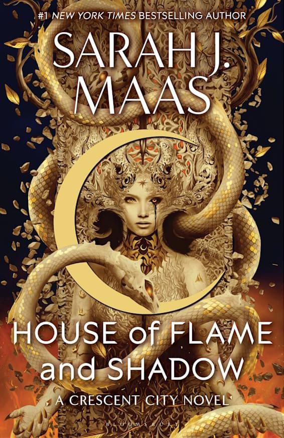

In the Crescent City series half-Fae and half-human Bryce Quinlan seeks revenge in a contemporary fantasy world of magic, danger, and searing romance.
HOUSE OF EARTH AND BLOOD

HOUSE OF SKY AND BREATH
HOUSE OF FLAME AND SHADOW